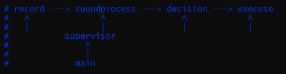

Spatiodynamic
The 75 cm high structure made of 12 perpendicular angle irons holds a stainless steel mirror. The mirror reflects the light of the lamps mounted on the base of the sculpture.
Cybernetic
The sculpture reacts randomly to the (sound)effects of the environment based on random calculations performed in the computer.
Chronodynamic
At calculated intervals, based on the inputs, the sculpture switches its outputs, the position of the mirror and the state of the lights.

{kind=link}
{kind=link}
{kind=link}
{kind=link}
{kind=link}
Based on Nicolas Schöffer's cybernetics
Schöffer Miklós is a world-renowned artist from Kalocsa, Hungary, the inventor of spatiodynamics, luminodynamics, chronodynamics and cybernetic sculpture.
Nicolas Schöffer's cybernetic creations react to signals from the environment along control and feedback cycles, so in contrast to kinetic works, their operation is not pre-determined, but depends on the coincidences characteristic of the environment.
Schöffer is the creator of the second avant-garde wave. His art is the shaping of immaterial media, which he interpreted as five topologies. These are time, space, light, sound and climatic effects (temperature, humidity, air movement, olfactory stimuli). Since these effects are in continuous motion, the essence of Schöffer's works is the dynamics of movement, which he programmed cybernetically.
In his Spatiodynamic works, Schöffer shaped the rhythm of the space based on an abstract concept. Each view of the sculptures consists of asymmetrical horizontal and vertical steel frame elements connected at right angles, on which he mounted coloured sheets and discs, initially fixed. In the Chronodynamism series these are mounted on rotating shafts. The coloured plates are later replaced by polished or matt aluminium and steel plates. The reflections on the shiny plates placed on the frame multiply the support elements and the internal structure of the frame, and bring the objects of the environment into the space of the sculpture.
In the LUX works, the plastic consists of perforated and polished metal geometric shapes fixed on a base frame made of horizontal and vertical square profiles, which are illuminated from the base and from the outside with coloured or white light. The shadows on the wall are considered part of the artwork. Reflections and light effects break up the artwork optically, bringing the environment into the space of the creation.
In the Microtemps series, time plays an important role in the concept of the works. These works are small boxes, the inside of which is either painted black or white, or lined with a reflective material. Various discs, hemispherical shells and plates made of stainless steel are set in motion inside the box by a programmed motor.
In the Chronos series, the variety of movement was achieved with the help of cybernetics through feedback and devices that sense the environment. The sensors could be of various types: photocells, microphones, thermometers, wind speed meters, etc. His city-scale cybernetic light sculptures can be found in several cities around the world. The highest (52m) is in the city of Liège. The Chronos 8 cybernetic light tower was built near Schöffer's birthplace in Kalocsa with the help of the ÉPGÉP company. – Wikipedia
New cybernetic sculpture
Nodi 1 is a study of Nicolas Schöffer's space, light and time dynamics, a sculpture reminiscent of Nicolas Schöffer's works.
It implements and expands cybernetics with the tools of the 21st century.
The frame of the sculpture is made up of 12 angle irons. The 4 75-centimetre vertical support columns are crossed at right angles by 4 50-centimetre and 4 25-centimetre horizontal bars. The black and silver painted iron elements are held together with screws.
Two medium-length elements are suspended in the middle on two vertical columns each. The rod holding the mirror is threaded through the holes drilled in the middle of these. The mirror is polished and joined together from two stainless steel plates.
The mirror is rotated through a range of 180° by a motor mounted on one of the central iron bars.
The other electronic components are mounted on the wooden base on which the sculpture itself stands. The sculpture is controlled by a Raspberry Pi 3 Model A+ mini single-board computer. The robotic components connected to the computer's GPIO pins are controlled by the custom program running on the computer. The outputs of the system, the servo and two lights via a relay, and the input of the system, a microphone, are connected to the computer.
{kind=link}
{kind=link}
{kind=link}
{kind=link}
{kind=link}
{kind=link}
{kind=link}
{kind=link}
Programme
The sculpture changes its state "randomly" at "random" intervals, approximately every few minutes. Each light turns on and off, the mirror changes its position in an angle of 0–180°. During a change, 1, 2 or 3 of the outputs can change.

The main input of the system is the microphone. The program monitors the volume of the sound detected in the microphone and its changes. A routine is run at certain intervals, which, based on the values of the input and the results of previous runs, decides whether the state of the sculpture will change and how it will change. The routine takes into account, among other things, the volume and dynamics of the perceived sounds, the number and alternation of loud, moderately loud and soft sounds. Based on these, it decides with a complicated decision system using random numbers. The decisions are random, but their probability is controlled by the inputs.
The behaviour of the routine is exotic, not precisely calibrated, but follows a few general rules, e.g. the sculpture reacts better in a loud, dynamic, stimulus-rich environment, and if the sculpture has not changed for a long time, it has a greater chance to change. But these are also based on chance, they are never certain.
Sometimes it appears as if the sculpture is moving in a regular, periodic manner, sometimes the sculpture may not move for minutes at a time. It surprises, startles and frustrates the observer.